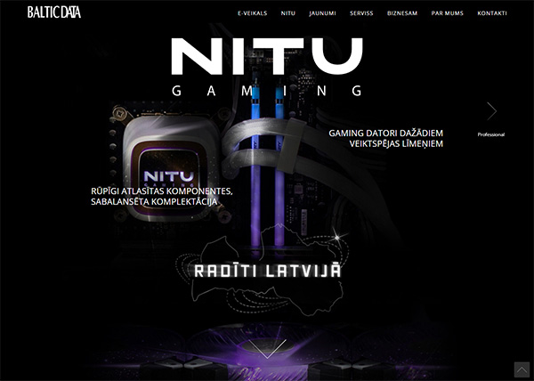
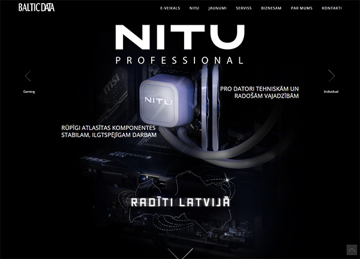
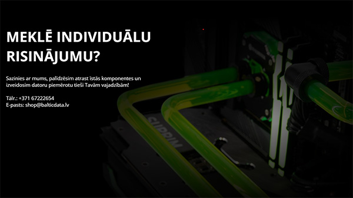
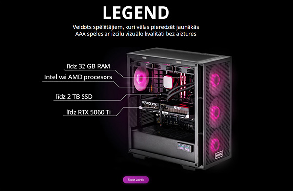
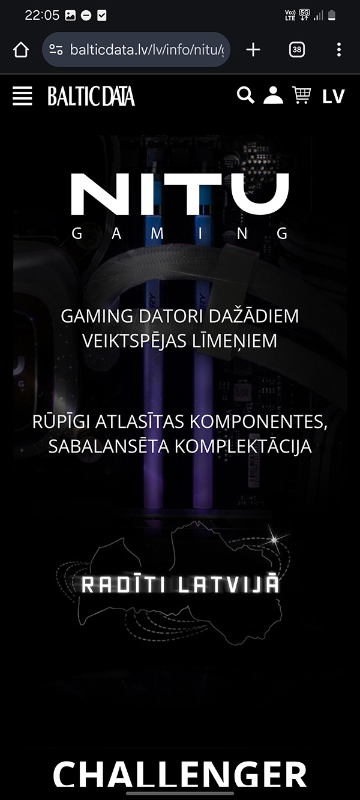
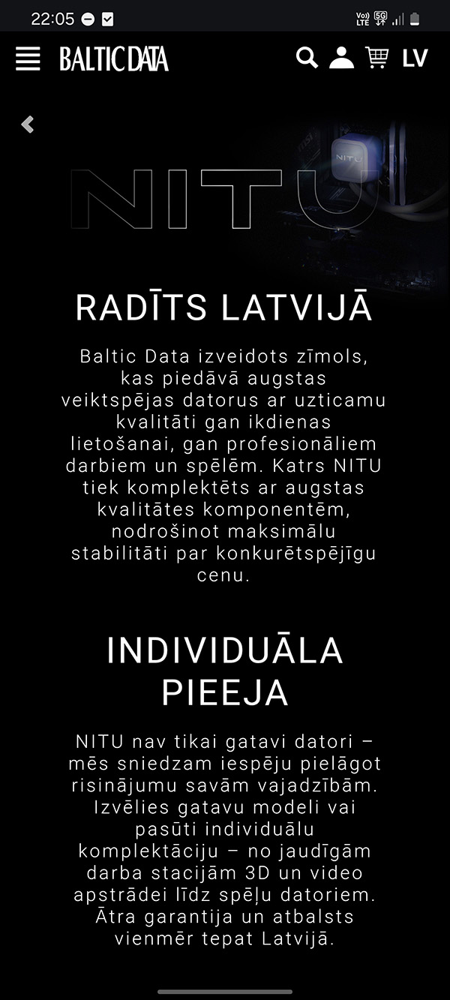
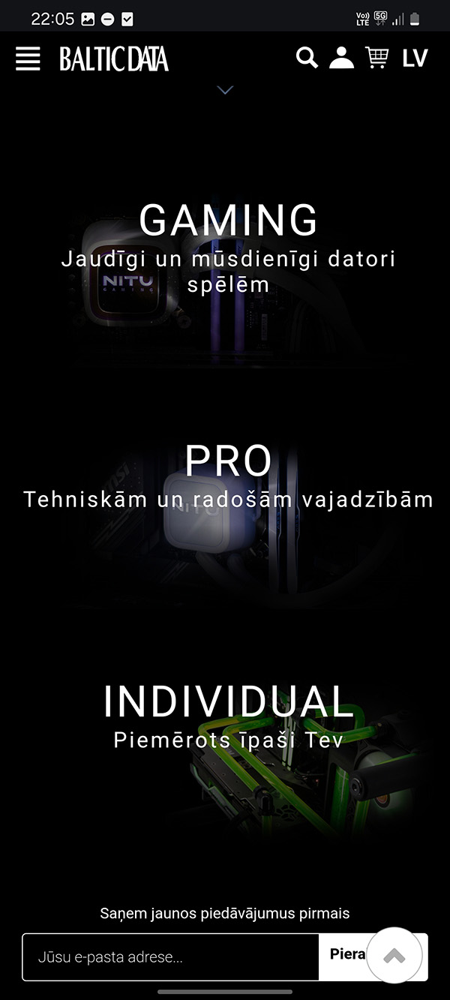

A responsive product experience translating high-performance
custom PCs from physical retail into a clear, scalable digital system.
This project focused on designing and building the core product
experience for NITU's ecommerce platform — including category
structure, product presentation, and responsive behavior.
NITU is a high-performance PC brand by Baltic Data.
The company builds reliable, customizable systems for gaming,
professional work, and specialized use cases.
While the hardware already existed and was sold in-store,
the brand lacked a digital experience capable of communicating
that quality online or supporting ecommerce growth.
The Digital Gap
Strong products, but no functional digital platform to support them.
No functional website — only static design files
Unclear hierarchy between PC categories
No clear communication of quality or customization
Before
Translating physical hardware into a digital buying experience
Design + Development
RoleDesigner & Front-End Developer
Ownership100% end-to-end execution
ScopeUX · UI · Front-end · System design
I was solely responsible for the design and front-end build of this platform.
Static Illustrator concepts were altered to suit the brand tone and transformed into a live ecommerce system.
I defined the site structure, information hierarchy, and component logic
required for long-term scalability.
The website became the primary interface between NITU's hardware
and its customers — translating complex system configurations
into clear, confident purchasing decisions.
While I coordinated with internal teams, all UX, visual design,
and front-end implementation decisions were executed independently.
Design
UX architecture & customer journey definition
Visual identity adaptation for digital commerce
Reusable layout and component system
Development
HTML / CSS / JavaScript implementation
Responsive layout across breakpoints
Integration planning with ecommerce & CMS systems
Product Range Structuring
The product offering needed clarity.
Different customer groups had distinct expectations, so the range
was restructured into three clearly defined categories — each with
its own purpose, tone, and communication strategy.
The category structure was designed to scale without reworking navigation,
templates, or content logic as new systems are added.
Gaming

Professional

Custom Builds
A temporary solution ahead of a future configuration system,
allowing flexibility without overengineering early.

Product Presentation Strategy
Each PC was presented using a visual-first approach.
Carefully prepared product imagery formed the foundation, with
key specifications overlaid directly on the system.
This reduced cognitive load and allowed users to understand
performance and positioning without navigating dense tables.

Exploring an Interactive Direction
An early concept explored interactive system switching,
dynamically updating visuals and specifications in real time.
After evaluating long-term maintenance and update frequency,
this direction was not deployed.
A more scalable solution was implemented using representative imagery
paired with "starting from" specifications.
Responsive Experience
The experience was designed for desktop first and
carefully adapted for mobile through a responsive layout system.
The mobile experience retains the same structure, hierarchy,
and functionality without simplification.



Outcome + Learnings
The final system is still in active use, supporting frequent product
updates without layout refactors, redesign cycles, or accumulated
design debt.
The resulting system supports frequent product updates,
new product launches, and future campaigns without requiring
structural or visual redesign.
The project reinforced the importance of balancing visual ambition
with operational sustainability when designing scalable systems.
 Before
Before